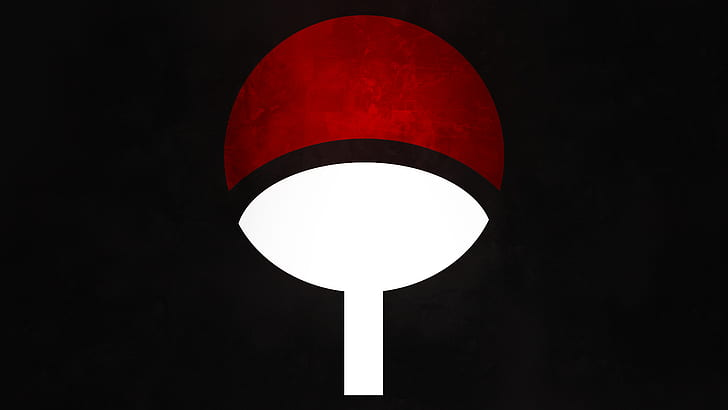

> Uchiha Itachi: Klan

Uchiha Klanı (うちは一族, Uchiha Ichizoku) Konohagakure'nin dört
soylu klanından biridir, aynı zamanda Sharinganları ve doğal savaş
yetenekleri sebebiyle köyün en güçlü klanı olarakta tanınırlar.
Konoha'nın yıllar önce kurulmasına yardım ettikten sonra, Uchiha
köy işlerinden gittikçe soyutlandı ve bu Uchiha Klan Katliamı esnasında
çok sayıda ölüm ile sonuçlandı. Birkaç Uchiha günümüze kadar yaşamıştır.
|
|||||||